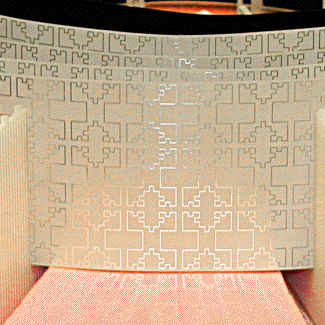
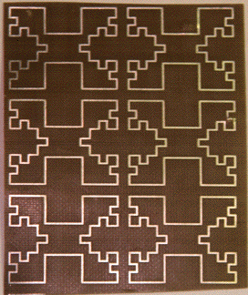
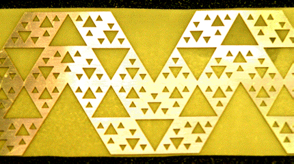
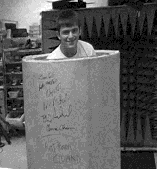
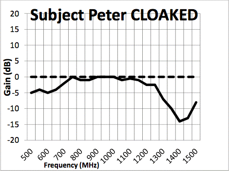

| Nathan Cohen and his group at FracTenna, producer of many fractal antennas, have adapted these designs to build wide-band microwave invisibility cloaks, recently patented. |
|
| The antenna consists of an inner ring, the boundary layer, that prevents microwaves from being transmitted across the inside of this ring. This is the region that will be invisible to outside observers. Surrounding the boundary layer are six concentric rings that guide microwaves around the boundary layer, to reconverge at the point antipodal to where they entered the cloak. |
|   |
| On the left is a magnification of one of the outer rings of the cloak. On the right is a sample piece of this material, revealing a structure repeated over two levels. This pattern is called the Minkowski fractal. |
|  |
| This is the pattern for the boundary layer, of obvious name. |
| Careful experiments at FracTenna showed the microwave path around the cloaked object matched very closely the direct path that would occur if no cloak were present, and this holds for a wide range of frequencies. |
| Moreover, no similar results have been obtained by any non-fractal cloak design, such as split-ring resonators. |
| Cohen comments, "There is no reason why the use of a fractal approach in DI [Diverted Image technology] cannot be scaled to work at infrared and visual light wavelengths. The limitation is a technological one, where the ability to fabricate micron and submicron structures determines the ability to have such wideband invisibility cloaks, with see through capability under DI, available." |
| In late August, 2012, Cohen's group cloaked a person. Interesting times ahead. |
|  |
|
|  |